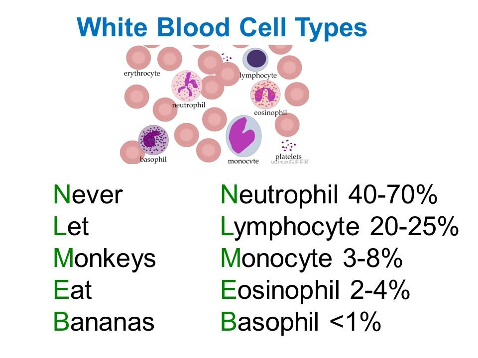
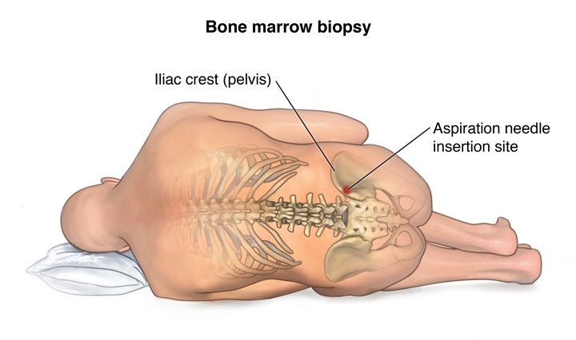
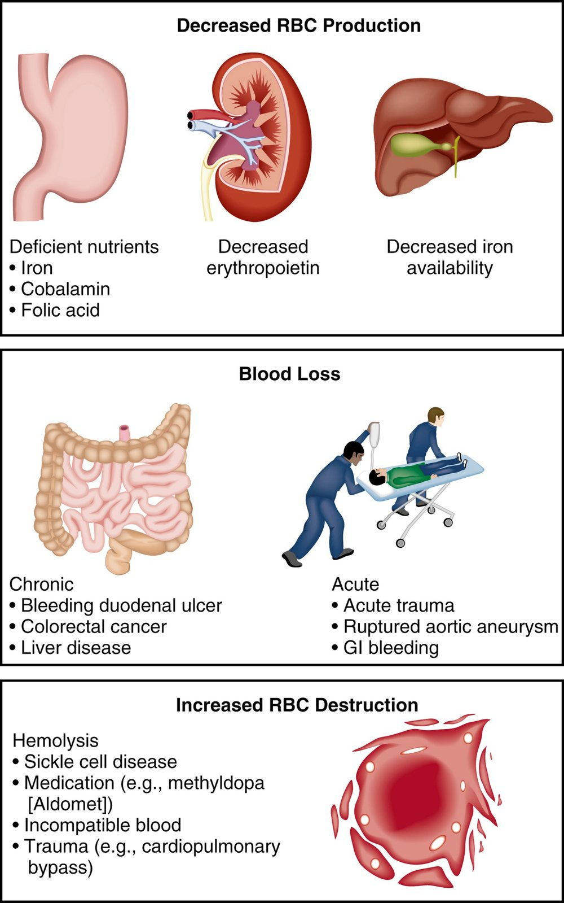

Week 2 · Topic 1
Hematology Labs & Diagnostics
The hematologic system covers three cell lines — red blood cells (RBCs), white blood cells (WBCs), and platelets. This page focuses on RBCs: the labs used to evaluate them, and the terminology and classification system used across every anemia topic that follows.
The CBC — RBCs, WBCs & Platelets
- A CBC (complete blood count) looks at all three cell lines: RBC count, hemoglobin & hematocrit (H&H), and WBC count.
- Normal WBC count: 5,000–10,000.
- Normal platelet count: 150,000–400,000 (also called thrombocytes).
- A differential ("WBC with diff") breaks the WBC count into the five types below — as percentages that always add up to 100%.

| Term | Meaning |
|---|---|
| Leukopenia | Low WBC count. |
| Leukocytosis | High WBC count — seen with infection. |
| Neutropenia | Low neutrophil count. High-stakes: neutrophils are the first responders to an acute bacterial infection, so a neutropenic patient has little defense against one. |
| Thrombocytopenia | Low platelet count. |
Shift to the left: in an acute bacterial infection, neutrophils are released fastest and rise first on the differential — including immature "band" neutrophils, not just mature ones ("segs"). A rising band count is the body releasing everything it has to fight the infection, and it's a sign of an acute bacterial process.
RBC Morphology — Size, Shape & Hemoglobin Content
Morphology (an RBC's size, shape, and color under the microscope) is one of the two ways anemia is classified — the other is etiology (cause), covered further down this page. Providers use morphology to help narrow down the cause of an anemia.
| Measurement | What It's Measuring | Values |
|---|---|---|
| MCV (Mean Corpuscular Volume) | Size of the RBC. | Normocytic (normal size) · Microcytic (small — e.g. iron deficiency anemia) · Macrocytic (large — e.g. megaloblastic anemias: B12 or folic acid deficiency) |
| MCHC (Mean Corpuscular Hemoglobin Concentration) | How concentrated the RBC is with hemoglobin. | Normochromic (normal) · Hypochromic (low) |
You won't be expected to memorize the actual MCV/MCHC numbers — just recognize and use the terms (hypochromic, normochromic, microcytic, macrocytic) the way they'd come up in clinical or on a question.
Hemoglobin & Hematocrit (H&H)
| Value | What It Is | Normal Range |
|---|---|---|
| Hemoglobin (Hgb) | The iron-containing pigment of the RBC. | Women: 12–16 · Men: 14–18 |
| Hematocrit (Hct / "crit") | The percentage of total blood volume made up of RBCs. | Women: 37–47% · Men: 42–52% |
Trend H&H, don't read it as a standalone value. Example: a 47-year-old male, post-op day 2 from a total colectomy, has a 7 AM H&H of 9.2/28.1. Alarming on its own — but if yesterday's H&H was even lower, this is trending upward, a reassuring finding that just needs continued monitoring rather than an urgent call to the provider.
- False low hematocrit: a patient retaining fluid (heart failure, kidney failure) has extra plasma, which drops the hematocrit percentage without the patient actually being anemic.
- False high hematocrit: a very dehydrated patient has too little plasma, which raises the hematocrit percentage without the patient actually having polycythemia (too many RBCs — its own topic, covered later this week).
Iron Studies
| Test | What It Shows |
|---|---|
| Serum Iron | Low in iron deficiency anemia. |
| Serum Transferrin | The protein that transports iron — decreased in iron deficiency anemia. |
| Serum Ferritin | The protein that stores iron. Decreased ferritin is the most sensitive test for iron deficiency anemia. |
Iron studies are ordered when the cause of a patient's anemia is unknown — not when it's already explained (e.g. a patient who lost blood in surgery yesterday doesn't need a workup for why they're anemic).
Other Anemia Diagnostics

| Test / Term | What It's For |
|---|---|
| Intrinsic Factor Antibody Test | Checks for antibodies against intrinsic factor (a substance made by stomach parietal cells, needed to digest B12). Positive = pernicious anemia — an autoimmune cause of B12 deficiency. Not every B12 deficiency is autoimmune — a strict vegan can be B12 deficient from diet alone. |
| Serum B12 & Serum Folate | Directly assess for B12 or folic acid deficiency. |
| Direct Coombs Test | Ordered when a transfusion reaction is suspected — checks whether incompatible blood was hung on the patient (a human error, and potentially life-threatening). |
| Indirect Coombs Test | A pre-transfusion compatibility screen ("type and screen") — the blood bank matches a sample of the unit against the patient's blood before it's ever given. |
| Stool for Guaiac (Occult Blood) | Detects blood in the stool that isn't visible to the naked eye — ordered when a GI bleed is suspected as the source of an anemia of unknown origin. |
| Bone Marrow Biopsy | Aspirates red marrow (commonly from the iliac crest) to evaluate blood-forming tissue directly, when RBC/WBC/platelet counts are low and the cause is unclear. Nursing implications: informed consent, timeout, pre-medicate, gentle pressure and assess the site for bleeding afterward. Used to work up aplastic anemia, where RBCs, WBCs (leukopenia), and platelets (thrombocytopenia) are all low at once — unlike most other anemias. |
| EGD / Colonoscopy | Endoscopic visualization of the GI tract to look for a bleed. EGD (esophagogastroduodenoscopy, sometimes just "gastroscopy") scopes the esophagus, stomach, and duodenum from above; colonoscopy scopes from below. |
Blood you can see in a bowel movement is called frank blood — no occult testing needed since it's already visible. Melena is stool that's dark, tarry, and unusually foul-smelling from digested blood — also a significant finding, and a common topic in Med-Surg since GI bleeds come up frequently.
Anemia — Classification by Cause
Anemia is classified by morphology (covered above) or by etiology — the underlying cause. There are three buckets.

| Cause | Examples |
|---|---|
| Decreased RBC Production | Nutritional deficiency (iron, B12/cobalamin, folic acid) · chronic kidney disease (↓ erythropoietin, which the kidney makes to drive RBC production) · liver disease (↓ iron availability) · aplastic anemia (bone marrow can't make RBC precursors) · chemotherapy |
| Blood Loss | Acute (trauma, ruptured vessel/aneurysm) — sudden, no time to compensate, cardiac instability develops almost instantly. Chronic (e.g. heavy menstrual flow) — insidious, better tolerated even at a low hemoglobin because the body has time to adapt. |
| Increased RBC Destruction | Sickle cell anemia (reviewed from Peds) · a hemolytic transfusion reaction from incompatible blood products |
Megaloblastic anemias (B12 or folic acid deficiency) fall under decreased production — impaired DNA synthesis makes RBCs abnormally large with fragile membranes, so they're also destroyed easily.
Anemia — Severity & Why the Symptoms Happen
| Severity | Hemoglobin | Presentation |
|---|---|---|
| Mild | 10–14 | May be asymptomatic or mildly fatigued with exertion. |
| Moderate | 6–10 | Cardiopulmonary symptoms, possibly even at rest. |
| Severe | < 6 | Symptomatic at rest; can be life-threatening, especially with comorbidities. |
| Finding | Why It Happens |
|---|---|
| Fatigue | Not enough oxygen reaching the muscles to produce energy. |
| Pallor (skin, palms, nail beds, conjunctiva) | Peripheral vasoconstriction shunts the blood that is available toward vital organs (heart, lungs) and away from the periphery. |
| Tachycardia / palpitations | Cardiac output rises as a compensatory mechanism, trying to circulate what oxygen is available faster. |
| Bone pain (sternum, iliac crest) | Erythropoietin secretion rises, driving the red marrow to work harder. |
| Angina, MI, worsening heart failure | The heart muscle itself isn't getting enough oxygen. |
| Dyspnea, increased respiratory rate, hypoxia | The body's attempt to bring in more oxygen to compensate. |
Self-Test Flashcards
Click a card to flip it and check your answer.